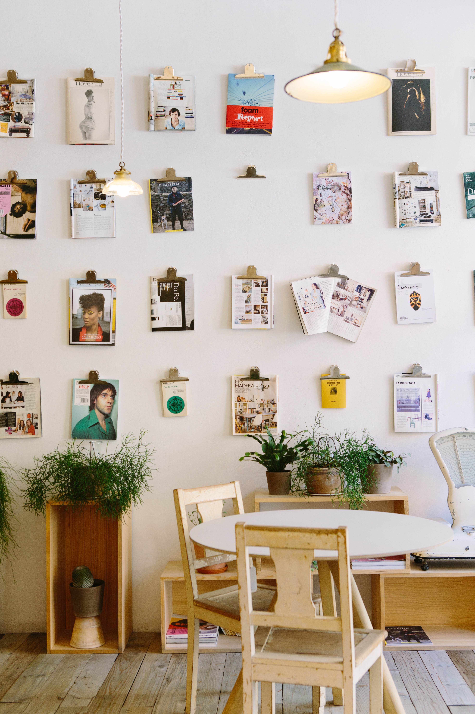

Interaction design
Interaction design is the desgin of interactive products and services in which a designer's focus goes beyond the item in development to isnclude the way users will interact with it. Interaction design can be understood in simple (but not simplified) terms: it is the design of the interaction between users and products. Most often when people talk about interaction design, the products tend to be software products like apps or websites. The goal of interaction design is to create products that enable the user to achieve their objective(s) in the best way possible.
If this definition sounds broad, that’s because the field is rather broad: the interaction between a user and a product often involves elements like aesthetics, motion, sound, space, and many more. And of course, each of these elements can involve even more specialised fields, like sound design for the crafting of sounds used in user interactions.
As you might already realise, there’s a huge overlap between interaction design and UX design. After all, UX design is about shaping the experience of using a product, and most part of that experience involves some interaction between the user and the product. But UX design is more than interaction design: it also involves user research (finding out who the users are in the first place), creating user personas (why, and under what conditions, would they use the product), performing user testing and usability testing, etc.